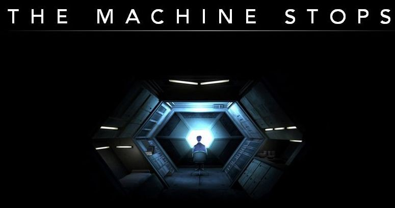

The story describes a world in which most of the human population has lost the ability to live on the surface of the Earth. Each individual now lives in isolation below ground in a standard room, with all bodily and spiritual needs met by the omnipotent, global Machine. Travel is permitted, but is unpopular and rarely necessary. Communication is made via a kind of instant messaging/video conferencing machine with which people conduct their only activity: the sharing of ideas and what passes for knowledge. The two main characters, Vashti and her son Kuno, live on opposite sides of the world. Vashti is content with her life, which, like most inhabitants of the world, she spends producing and endlessly discussing secondhand 'ideas'. Kuno, however, is a sensualist and a rebel. He persuades a reluctant Vashti to endure the journey (and the resultant unwelcome personal interaction) to his room. There, he tells her of his disenchantment with the sanitised, mechanical world. He confides to her that he has visited the surface of the Earth without permission, and that he saw other humans living outside the world of the Machine. However, the Machine recaptured him, and he has been threatened with 'Homelessness', that is, expulsion from the underground environment and presumed death. Vashti, however, dismisses her son's concerns as dangerous madness and returns to her part of the world.
As time passes, and Vashti continues the routine of her daily life, there are two important developments. First, the life support apparatus required to visit the outer world is abolished. Most welcome this development, as they are skeptical and fearful of first-hand experience and of those who desire it. Secondly, Technopoly, a kind of religion, is re-established, in which the Machine is the object of worship. People forget that humans created the Machine, and treat it as a mystical entity whose needs supersede their own. Those who do not accept the deity of the Machine are viewed as 'unmechanical' and threatened with Homelessness. The Mending Apparatus—the system charged with repairing defects that appear in the Machine proper—has also failed by this time, but concerns about this are dismissed in the context of the supposed omnipotence of the Machine itself.
During this time, Kuno is transferred to a room near Vashti's. He comes to believe that the Machine is breaking down, and tells her cryptically "The Machine stops." Vashti continues with her life, but eventually defects begin to appear in the Machine. At first, humans accept the deteriorations as the whim of the Machine, to which they are now wholly subservient, but the situation continues to deteriorate, as the knowledge of how to repair the Machine has been lost. Finally, the Machine apocalyptically collapses, bringing 'civilization' down with it. Kuno comes to Vashti's ruined room. Before they perish, they realise that humanity and its connection to the natural world are what truly matter, and that it will fall to the surface-dwellers who still exist to rebuild the human race and to prevent the mistake of the Machine from being repeated. Themes
The first one is people are over-reliant on technology, so that without technology, humans will not survive. In the article, machinery replaces religious beliefs in people's minds. Everyone is technically enthusiastic. They think technology is the truth. I think this is a kind of irony. Machinery was invented by humans, and humans gave it definitions, but now it in turn dominates people's minds. People don’t have their own ideas, they lose their sense of space but think it is a matter of course. Even at the end of the article, the machine fails and begins to stop, people were still passively accepting reality. Even if the music provided by the machine is flawed, the fruit provided is moldy, and people just choose to accept rather than resist. Isn't this the sadness of people's excessive dependence on machinery?
In the article, the mother thought that it was a waste of time to talk face to face with his son. Even through video chat, it was a waste of time. This reminds me of more and more video chat software appearing in our lives in real life, Wechat, Skeyp, Facetime. People lack face-to-face communication and instead use video chat over the web. Isn't this what was written in the article?
The second theme in this article that I realized was the environment. People live underground because the surface of the earth is so badly damaged that it is not suitable for human habitation. There is not much mention about the environmental issues on the surface of the earth, but this is a question worth considering. Why is the surface of the earth unsuitable for living, because the life of the earth is up? No. After all, it is because of the various machinery developed by human civilization. Humans have invented machinery, which makes human life easier and more accessible to the resources they want. This was a good thing, but due to the excessive destruction of human beings, the earth will eventually be destroyed. Human manipulation of machinery destroys the earth far more than humans destroy their hands by their hands. I know there is a kind of logging machinery. The efficiency of cutting trees in the forest is far greater than human cutting trees with a saw. This kind of machinery increases the speed at which humans can access resources, and at the same time increases the speed at which the earth was destroyed. Human beings are deserved to live underground.